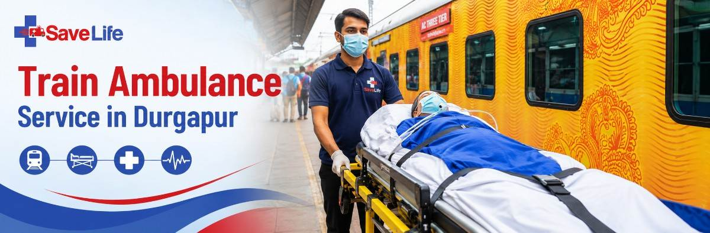

Safe, Medically Supported Patient Transfer to Another City
When a patient needs advanced treatment outside Durgapur, arranging the right mode of transportation can be just as important as choosing the hospital. Save Life Wellness provides train ambulance service in Durgapur for patients who need medically supported long-distance transportation with appropriate monitoring, medical assistance, and coordinated road ambulance support.
From pickup at your home or hospital to railway station transfer and onward transportation to the destination hospital, our team helps coordinate the journey around the patient's medical needs.
A train ambulance is a planned medical transportation service designed for patients who need to travel long distances by rail while receiving appropriate medical assistance during the journey.
Unlike booking an ordinary train journey for a patient, a medical transfer is planned around the patient's condition. Depending on the requirement, a trained paramedic, nurse, doctor, or other medical professional may accompany the patient. Medical equipment such as oxygen, monitoring devices, suction equipment, or infusion support can also be arranged when medically required.
The journey can also include road ambulance transportation at both ends, helping move the patient from their home or hospital in Durgapur to the railway station and from the destination station to the receiving hospital.
This makes train ambulance transportation a coordinated bed-to-bed patient transfer, rather than simply a railway journey.
Not every patient needs an air ambulance, and a long road journey may not be comfortable or appropriate for everyone. For suitable patients, a medically supported train transfer can provide another option for reaching a hospital in a different city.
A train ambulance from Durgapur may be considered when:
Specialized treatment may require travelling to a hospital outside Durgapur. A planned train transfer can help make the journey more manageable.
Patients who cannot walk or sit independently may need assistance with lifting, transferring, positioning, and movement throughout the journey.
Patients who depend on supplemental oxygen may need oxygen equipment and medical supervision during transportation.
Some patients may require observation of vital signs during a long journey. Appropriate monitoring equipment and medical personnel can be arranged based on the patient's condition.
A patient who cannot safely travel alone may require a trained medical attendant to provide assistance and monitor their condition.
For certain long-distance transfers, spending many hours continuously on the road can be physically demanding. Rail transportation may be considered when the patient's medical condition permits it.
When the situation does not demand rapid air evacuation, a train-based transfer may be considered as an alternative, depending on the patient's condition and medical advice.
Important: The safest transportation option depends on the patient's medical condition, urgency, distance, and treating doctor's advice.
Choosing patient transportation is not simply about finding the fastest or cheapest option. It is about finding a mode that matches the patient's medical needs.
For some patients, travelling by rail can be more practical than spending a prolonged period inside a road ambulance. The suitability of rail travel should always be assessed according to the patient's condition.
A trained medical attendant can travel with the patient when required, helping with observation, basic medical care, positioning, and other transportation-related needs.
If the patient's condition requires it, appropriate oxygen and monitoring equipment can be arranged. The equipment should be selected according to the patient's actual medical requirements rather than using the same setup for every transfer.
Air ambulance transportation can be appropriate when time is critical, but it is not necessary for every long-distance patient transfer. For medically suitable patients, train transportation may offer a more practical alternative.
With proper planning, the journey can connect home or hospital → road ambulance → railway station → medical train transfer → destination station → road ambulance → receiving hospital.
A patient's medical requirements can vary significantly. Therefore, the support provided during a train ambulance journey should be planned according to the patient's condition.
Depending on the medical assessment, support may include:
The purpose of this equipment is not simply to make the journey look like an ICU setup. Each item should have a medical purpose based on the patient's needs.
Before arranging the transfer, our team can discuss the patient's current condition, mobility, oxygen requirement, medications, monitoring needs, and other relevant details to help plan appropriate support.
The medical escort depends on the patient's condition and the level of care required.
Depending on the assessment, the patient may travel with:
A doctor may be considered when the patient's condition requires a higher level of medical supervision.
Nursing support may be appropriate for patients who require ongoing nursing care during transportation.
A trained paramedic can provide transportation-related medical assistance and monitor the patient as required.
Family members may also travel with the patient subject to journey arrangements and applicable railway requirements.
The appropriate medical team should be decided according to the patient's condition rather than using the same escort arrangement for every journey.
For families, arranging the train is only one part of the problem.
The patient still needs to get from the hospital bed to the railway station—and after reaching the destination, from the railway station to the receiving hospital.
That's why Save Life Wellness can coordinate the complete patient transfer journey.
The Journey Can Be Coordinated Like This:
This coordinated approach can reduce the burden on family members and help keep the patient's transportation organized from the starting point to the receiving hospital.
Arranging a patient transfer becomes easier when the process is clearly explained.
Contact our team and provide basic information about the patient, including the current location, destination, medical condition, mobility, oxygen requirement, and preferred travel date.
Our team discusses the patient's condition and the level of medical support that may be required during transportation.
The journey is planned around the patient's needs, destination, available railway options, road ambulance requirements, and medical escort.
The appropriate medical attendant and equipment can be planned according to the patient's condition.
A road ambulance can be coordinated to move the patient from the home or hospital to the railway station.
After reaching the destination, a road ambulance can be arranged to transfer the patient from the railway station to the receiving hospital.
One team. One coordinated journey. Less stress for the family.
Patients from Durgapur may need to travel to different parts of India for specialized treatment. Depending on the patient's requirements and available travel arrangements, train ambulance services can be planned for destinations such as:
The exact route, train availability, journey timing, medical arrangements, and patient support requirements depend on the travel date, destination, patient's condition, and transportation plan.
Need a route that isn't listed above?
Tell us your pickup and destination—we can help you explore the available patient transportation options.
There is no single mode of transportation that is right for every patient.
| Transportation | May be suitable for | Main consideration |
|---|---|---|
| Road Ambulance | Shorter or flexible intercity transfers | Door-to-door flexibility |
| Train Ambulance | Suitable long-distance patient transfers | Journey duration and medical requirements |
| Air Ambulance | Time-sensitive or medically urgent transfers | Speed and higher overall cost |
The decision should be based on medical condition, urgency, distance, required support, and treating doctor's recommendation.
A train ambulance should not automatically be considered the best option simply because it costs less. The patient's safety and medical suitability should remain the priority.
There isn't one fixed price for every patient transfer.
The cost of a train ambulance from Durgapur can vary depending on several factors, including:
Instead of relying on a generic price displayed online, you can share the patient's details with our team to understand the requirements and receive an estimated cost for the planned journey.
This is one of the most important questions families ask before arranging long-distance patient transportation.
The answer depends on the patient's medical condition.
A patient who requires medical transportation should be assessed before deciding whether train, road, or air travel is appropriate. For suitable patients, a medically planned train journey can include appropriate monitoring, oxygen support, medical escort, and coordinated ambulance services.
The preparation may include:
However, not every critically ill patient is suitable for train transportation. Patients with highly unstable or time-critical conditions may require a different form of medical transport. The treating doctor's recommendation and professional medical assessment should be considered before making the final decision.
When moving a patient across cities, families need more than transportation. They need coordination, communication, and medical support throughout the journey.
Our team can assist families in planning long-distance patient transportation and understanding the available options.
Medical attendants and equipment can be planned according to the patient's condition and transportation requirements.
The journey can include road ambulance support for transportation between the patient's location, railway station, and destination hospital.
We focus on coordinating the complete movement instead of leaving the family to arrange each stage separately.
Whether the patient needs to travel to another city for specialized treatment or return closer to family, we help plan the transportation requirements.
Families should know what is being arranged, what medical support is required, and what factors affect the cost before the journey begins.
Long-distance medical transportation can be stressful. Our coordination team helps families understand the process and prepare the required information for the journey.
&nsbp;Patient transportation may begin from different parts of Durgapur, not just one location.
Depending on the patient's pickup point, arrangements can be coordinated from areas such as Bidhannagar, City Centre, Benachity, Industrial Area, and surrounding parts of Durgapur.
The starting point may be a hospital, nursing home, residence, or another appropriate location depending on the patient's situation.
The goal is to connect the patient's current location with the railway journey and destination hospital through a properly coordinated transportation plan.
A train ambulance service is a medically supported patient transportation arrangement for suitable long-distance journeys by train. Depending on the patient's condition, medical attendants, equipment, oxygen support, and road ambulances can be arranged.
The journey typically involves patient pickup, road ambulance transportation to the railway station, medically supported train travel, destination station pickup, and road ambulance transfer to the receiving hospital.
A bedridden patient may be able to travel by train with appropriate medical planning and assistance. However, suitability depends on the patient's medical condition and the level of support required.
Oxygen support can be arranged when medically required. The amount and type of oxygen equipment should be determined according to the patient's condition and expected journey requirements.
A medical attendant can be arranged according to the patient's medical requirements. This may include a paramedic, nurse, or doctor depending on the level of care needed.
Yes, a train-based patient transfer from Durgapur to Delhi can be planned for medically suitable patients. The exact arrangement depends on the patient's condition, journey date, route, railway availability, and required medical support.
Family members may be able to accompany the patient depending on the journey arrangements and applicable railway requirements. The number of accompanying people should be discussed while planning the transfer.
There is no universal fixed price. Cost depends on the destination, distance, patient condition, medical escort, equipment, road ambulances, railway arrangements, and other journey requirements.
Road ambulance support can be coordinated for pickup from the patient's home or hospital and for transfer from the destination railway station to the receiving hospital. The exact requirement should be confirmed while planning the journey.
The time required depends on the patient's medical needs, destination, travel date, railway availability, medical team requirements, and road ambulance arrangements. Contact the team as early as possible so the journey can be planned properly.
A long-distance patient transfer doesn't have to be managed alone.
If your loved one needs to travel from Durgapur to another city for medical treatment, Save Life Wellness can help coordinate the transportation plan, medical support, road ambulance connections, and destination transfer according to the patient's requirements.
Tell us:
We'll help you understand the next steps.